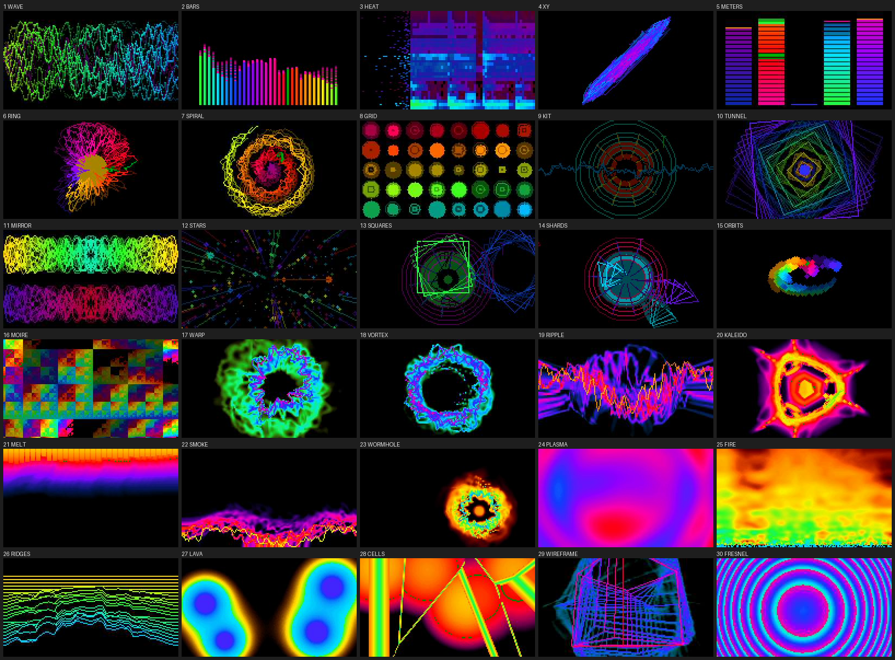
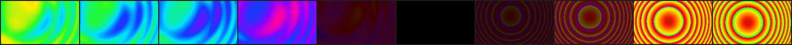
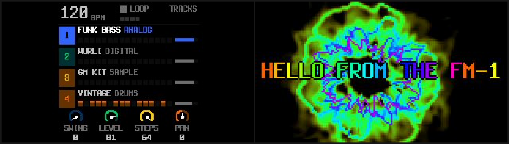

Synthesthetic handbook
Synthesthetic turns the M-VAVE FM-1 into an audio/video synth. It's the first FM-1 firmware that sends video to a computer over USB. Plug your FM-1 in, choose it from the camera list in OBS, Zoom, FaceTime or another video app, and you'll see 30 visualizers that react to your music. There's no camera in the FM-1. It's in that list because a USB camera is the standard way to get video onto a computer, so you don't need a driver or capture card. The FM-1 is still the same four-track groovebox.
The name comes from synesthesia, aesthetic and synth.
Synthesthetic is free software under the GPL-3.0, built on SLOOP 2.7.1 by isod89 and Felucca by Leo Kuroshita of Hügelton Instruments. This is a beta, so use it at your own risk.
- Install it with the web installer in Chrome or Edge.
- Edit sounds, patterns and visual settings in the web editor.
- Try it without an FM-1 on the Play page, which runs the firmware in your browser.
- Download releases and read the source code at github.com/michaeljsmalley/synthesthetic.
- Build it yourself, or see how it works inside, with DEVELOPMENT.md.

Contents
- What it does
- Install and update
- First steps
- The visualizer
- SCREEN mode
- Autopilot and attract mode
- USB video
- MIDI
- The web editor and installer
- Play in the browser
- Troubleshooting
- Recovery and safety
- Credits and licenses
What it does
The instrument comes from SLOOP. It has four tracks, three synths and a drum machine, with 12 synth engines (including six-operator FM that loads DX7 patches), 153 sounds, 37 drum kits, a step sequencer with parameter locks, song sections and 27 punch-in effects. SLOOP's guide covers it in detail.
The visuals are new in Synthesthetic. There are 31 modes, nine palettes, four knobs modeled on the Critter & Guitari EYESY, an autopilot that changes the picture on the bar, and a short fade between modes.
Over USB, the FM-1 shows up as a camera called Synthesthetic that sends 320 × 180 MJPEG at 30 frames per second. The same cable carries USB-MIDI and a USB audio input with the FM-1's output (16-bit stereo at 44.1 kHz).
Install and update
You need an FM-1, a USB data cable plugged directly into the computer (no hub), and Chrome or Edge on a computer or an Android phone. The installer uses Web MIDI, which those browsers support. Before you start, close any other app that uses MIDI, including browser tabs with the editor open.
- Open the installer.
- Press INSTALL and allow MIDI access when the browser asks.
- Wait until it says Done, and don't unplug the cable while it's writing. The FM-1 then restarts into Synthesthetic's boot screen.
Which firmware you can install over
You can install directly over M-VAVE's official V15, Dinghy or SLOOP. If your FM-1 runs anything else, such as Baud Girl's FM-1+VA, go back to official V15 first with M-VAVE's own updater, M-UPGRADE. Installing over a different firmware family's flash layout is the most common way FM-1s get bricked.
Installing from a terminal
Download the .fwsc file from the releases page, or build it yourself, then run:
python3 tools/fm1_install.py synthesthetic-0.1.fwscThis needs Python with mido and python-rtmidi installed.
Updates keep your work
Projects, settings, presets, kits and samples live in a part of the flash that updates never touch. Patterns you recorded under SLOOP are still there after you install Synthesthetic, and after every Synthesthetic update. To start from scratch, make a NEW project or erase the sections with SAVE > PROJECT > ERASE.
Back up first
Before you install any custom firmware for the first time, make a full backup of the flash. It's the only way to put an FM-1 back exactly as it was.
- On a Mac, put the FM-1 into download mode with the stock soft key (
tools/fm1_softkey.pysends it), then read the whole 1 MiB with M-Flasher. Start M-Flasher within about 30 seconds of the FM-1 entering download mode, or it drops out. Don't install M-Flasher's optional m-bootloader, because every recovery tool expects M-VAVE's own boot code. - On Windows or Linux, MvaveFM1Unbricker and jl-uboot-tool can read and write the flash in the same mode.
Going back to official V15
Use the last section of the installer page, with the unmodified FM-1.fwsc from M-VAVE's V15 download. Save a backup in the editor first (Projects, then Backup), because the official firmware can't open Synthesthetic projects. M-UPGRADE works too.
First steps
There's no factory song, so PLAY does nothing until you've recorded something. For a quick beat, turn ALGORITHM to track 4 (orange, the drums), press REC, play a beat on the white keys, and press REC again on the first beat after your last bar. The loop closes, sets the tempo and starts playing. SLOOP's guide walks through this in more detail.
Hold HOME for about a second to open the menu. It has SCREEN, LIGHTS, AUDIO, SYSTEM and Synthesthetic's VJ section. SYSTEM > ABOUT shows the version, and "2 CORES" when the second core is running. That's the core that draws the video.
To open the visualizer, tap HOME on the TRACKS screen. Tap it again to close it.
The visualizer
The visualizer shows the mode's name and number above the picture and the four knob values below it. AUTO appears in amber while the autopilot is running. HOME or any page button closes it, and the keys, PLAY, REC and the layers keep working as usual.
| Control | What it does |
|---|---|
| SELECT | Picks the next or previous mode (31 in all) |
| PRESETS | Picks the palette (SPECTRUM, NEON, FIRE, OCEAN, CRT, VAPOR, ACID, THERMAL or MONO) |
| ALGORITHM | Turns the autopilot off, or sets it to change the picture every 4, 8, 16 or 32 bars |
| KNOB 1 AMOUNT | Size, scale, strength or count, depending on the mode |
| KNOB 2 RATE | Speed, rotation and how fast the palette cycles |
| KNOB 3 TRAILS | How long trails last, from none to almost permanent |
| KNOB 4 COLOR | The hue, or where the palette starts |
Your settings are saved and survive power-off and firmware updates. A mode change fades over about a third of a second.

The modes
| # | Mode | What it shows |
|---|---|---|
| 1 | WAVE | The waveform of the mix, left and right, held steady |
| 2 | BARS | 32 bands from 40 Hz to 10 kHz, about a quarter octave each, in decibels, with falling peak caps |
| 3 | HEAT | The spectrum scrolling past, from cold colors to hot |
| 4 | XY | The left channel plotted against the right, showing the stereo image |
| 5 | METERS | Levels for tracks 1 to 4 and the mix, with peak hold |
| 6 | RING | The waveform wrapped around a ring, with a disc in the middle that swells with the bass |
| 7 | SPIRAL | The waveform drawn along a spiral from the center |
| 8 | GRID | Forty circles, each one a point on the waveform |
| 9 | KIT | Each drum as its own shape. The kick is a disc that pops, the snare a star, the clap a scatter of blocks, the closed hat a tick, the open hat a ring that opens, the toms triangles (low on the left, high on the right), the crash a wide ring with sparks, the ride a small ring, and other percussion a diamond |
| 10 | TUNNEL | Squares receding into the distance, pushed by the mix and the kick |
| 11 | MIRROR | The waveforms mirrored four ways |
| 12 | STARS | A starfield flying toward you, faster with more bass |
| 13 | SQUARES | A square for each synth note in its track's color, plus the drum shapes from KIT |
| 14 | SHARDS | Triangles thrown out by synth notes, plus the drum shapes from KIT |
| 15 | ORBITS | One dot per band, each on its own orbit |
| 16 | MOIRE | An XOR moiré pattern that speeds up with the level |
| 17 | WARP | Classic video feedback. The picture zooms and turns, fed by the waveform on a ring and pushed by the kick |
| 18 | VORTEX | A whirlpool, strongest at the center, with sparks from the bands |
| 19 | RIPPLE | Rings of zoom spreading out from the center, with the waveform across them |
| 20 | KALEIDO | The picture folded into 4, 6 or 8 mirrored wedges that slowly turn |
| 21 | MELT | Everything drips down and wobbles, fed by the spectrum along the top |
| 22 | SMOKE | Everything rises and curls, fed by the waveform along the bottom |
| 23 | WORMHOLE | A wandering hole that pulls the picture around and in |
| 24 | PLASMA | Four waves added together, with the colors cycling through them |
| 25 | FIRE | Flames rising from the bottom, fed by the bands and flaring on the kick |
| 26 | RIDGES | The last few seconds of the spectrum, drawn as a mountain range |
| 27 | LAVA | Four blobs that swell with their bands and merge into each other |
| 28 | CELLS | Cells around eight drifting points, with bright edges, shaken by the kick |
| 29 | WIREFRAME | A rotating cube, octahedron, icosahedron or tesseract that leaves trails |
| 30 | FRESNEL | Two zone plates drifting through each other |
| 31 | SCREEN | The FM-1's own display instead of a picture, for streaming how you work |
The visuals listen to the mix before the MASTER knob, so turning the volume down doesn't change the picture. The spectrum modes measure in decibels, from 0 dBFS at full height down to -60 dB at the bottom.
SCREEN mode
With SCREEN selected, the video shows the FM-1's display as it looks, including every page, layer and menu you open. It appears at three-quarter size (180 × 180) in the middle of the frame, with no overlay or effects, which works well for tutorials or for showing how you work during a set. The autopilot and attract mode never switch to or away from SCREEN.

Autopilot and attract mode
Autopilot
Turn ALGORITHM on the visualizer to set it, or go to VJ > AUTOPILOT in the menu. Every 4, 8, 16 or 32 bars, right on the bar, it picks a new mode with its own variation, and every other time a new palette too. When the sequencer is stopped it keeps time at the current tempo. Your own mode and palette stay saved. It's on by default, every 8 bars.
Attract mode
Set it under VJ > ATTRACT in the menu to off, 30 seconds, or 1, 2 or 5 minutes (the default is 1 minute). If you leave the TRACKS screen that long without touching anything, the visualizer opens by itself. Any button or key closes it again and does its normal job.
USB video
The FM-1 has no camera, but it sends its video the way a USB camera does, using the standard USB video class (UVC). Every computer and video app already supports UVC, so the FM-1 appears in their camera lists with no driver or capture card. In those lists it's called Synthesthetic.
It sends 320 × 180 MJPEG at 30 frames per second, the same picture as the visualizer, whether or not the visualizer is open on the screen. Photo Booth, QuickTime, OBS, Zoom and FaceTime all recognize it, and the 16:9 frame fits their previews without cropping. The MIDI port is still called Felucca, because that's the name installers and editors look for.
It has only been tested on macOS so far. Windows and Linux use the same standard USB video driver, so they should work, but nobody has tried them yet.
Things to know about video apps
- Photo Booth mirrors its preview, so text looks backwards there. The FM-1 sends the picture the right way around. OBS and QuickTime recordings aren't mirrored, and Zoom and FaceTime only mirror your own self-view, not what other people see.
- Only one app can use a camera at a time. Apps that take every camera, such as Camo Studio, keep the FM-1 from the others, so quit them first.
- The FM-1 is also an audio input, so apps that record sound with the video will ask for microphone access. Video on its own only needs camera access.
- ffmpeg's camera input on macOS holds one frame at a time and drops frames above about 22 per second. The FM-1 sends 30. Use OBS, QuickTime or
tools/fm1_avrate.pyto see the real frame rate. - On a Mac, Audio MIDI Setup can keep showing an old name for the FM-1 until you remove its entry.
Camera controls
Any app that adjusts a camera shows the FM-1's four camera controls as sliders. You can use OBS on Windows, v4l2-ctl on Linux, a camera settings app on macOS, or tools/fm1_uvcctl.py from a terminal. Each control turns one of the visualizer's knobs.
| Camera control | Knob |
|---|---|
| Brightness | AMOUNT |
| Saturation | RATE |
| Contrast | TRAILS |
| Hue | COLOR |
The overlay
The overlay appears in the video only, never on the FM-1's screen. Set it under VJ > OVERLAY in the menu.
- INFO shows the tempo, the bar and beat, the mode and palette names for a moment when they change, and a LIVE tag that blinks on the beat.
- TITLE shows a title over the picture in rainbow letters that slowly shift color.
- INFO + TITLE shows both.
The title is SYNTHESTHETIC until you change it. It can be up to 19 characters long and is saved with your settings. You can set it in three ways.
- On the installer page, in the Title overlay section. Type a title, choose what the overlay shows and press Send. You don't need the editor for this.
- On the web editor's VJ page, which reads the title, the overlay and every other visual setting from the FM-1 and sends your changes back.
- From a terminal:
python3 tools/fm1_vj.py title="LIVE AT NINE" overlay=title
python3 tools/fm1_vj.py # show every visual setting
python3 tools/fm1_vj.py --defaults # go back to the defaultsMIDI
The visuals listen on their own MIDI channel, which you set under VJ > VISUALS MIDI CH in the menu. It's channel 16 by default, and OFF turns it off.
| Message | What it does |
|---|---|
| CC 20, 21, 22, 23 | Sets AMOUNT, RATE, TRAILS and COLOR (0 to 127) |
| CC 24 | Picks the mode (0 to 127, spread across the 31 modes) |
| CC 25 | Picks the palette (0 to 127, spread across the 9 palettes) |
| CC 26 | Sets the autopilot (0 is off, up to 127 for every 32 bars) |
| CC 27 | Sets the overlay (0–31 off, 32–63 info, 64–95 title, 96–127 both) |
| Program Change n | Picks mode n + 1 |
| Any note | Counts as a beat. The shape modes and the feedback modes treat it as a kick |
Everything else on that channel works as before, so SLOOP's REMOTE and FX CH keep their CCs and notes if they share it. Changes made over MIDI or with the camera controls are saved like turns of the knobs.
The web editor and installer
The editor is SLOOP's web editor under a new name. It runs in Chrome or Edge, talks to the FM-1 over USB-MIDI, and edits sounds, sequences, songs, kits, samples and themes, and makes full backups. It also works offline, as a single downloaded file or installed as an app. Synthesthetic adds a VJ page for every visual setting, and backups include them.
The installer page installs and updates Synthesthetic, sets the title overlay, and can take the FM-1 back to official V15.
Play in the browser
The Play page runs Synthesthetic on a 3D model of the FM-1. It's the actual firmware, compiled to WebAssembly, and the video it sends plays next to the model.
On your first visit, the FM-1 has a demo song loaded in song mode, about 107 seconds of Japanese fusion at 90 BPM in F major, in the spirit of Himiko Kikuchi and Masayoshi Takanaka. Press PLAY to hear it.
| Section | Bars | What happens |
|---|---|---|
| D, intro | 4 | The TINE EP plays Bbmaj9, Am11, Gm9 and C13 over a dusty hi-hat, then the bass and the beat come in and the lead leads into the verse |
| A, verse | 8 | A breezy I-IV vamp, Fmaj9 and Bbmaj9, with FM BASS pushing into each bar, rim clicks on the clave and the G-FUNK LD theme |
| B, chorus | 8 | City pop's "royal road" progression, Bbmaj9, C9sus4 to C9, Am11 and Dm9, with the backbeat in and the lead doubled an octave up |
| A, verse | 8 | |
| C, bridge | 4 | Dbmaj9 and Ebmaj9, then Cm9 to F13 into the last chorus, in half time on the ride, under a lead solo |
| B, chorus | 8 | After the chorus the song starts again from the intro |
STOP brings the tracks back to the verse, so you can edit it or play along. To loop the verse instead, hold SAVE and press white key 13 to switch from SONG to LOOP.
You can play it with a mouse or touch screen, the computer keyboard, or a MIDI keyboard. To keep a button held while you play keys, right-click it, or press and hold it on a touch screen.
| Keys | What they do |
|---|---|
Z to , plus S D F H J L | F3 to F4 (white keys 1 to 8, which also enter steps 1 to 8) |
Q to I plus 2 3 5 6 8 | G4 to G5 (white keys 9 to 16) |
Space, Enter, Esc | PLAY, REC and HOME |
Shift, A, G | Hold SEQ, ARP and GLO |
← →, ↑ ↓, [ ] | OCT− and OCT+, SELECT, PRESETS |
A MIDI keyboard plays the selected track, like the FM-1's own keys. What you make is saved in your browser, and Start over erases it. Anything that needs USB, like the editor, the installer or your own samples, needs a real FM-1.
Troubleshooting
PLAY makes no sound
The FM-1 doesn't come with a song. Record a pattern first, as described in First steps.
My old patterns are still there after updating
That's on purpose, because updates never touch your projects. To start clean, make a NEW project or use SAVE > PROJECT > ERASE.
The camera doesn't show up
Make sure the FM-1 is switched on and connected directly to the computer with a data cable. Quit apps that take every camera, such as Camo Studio, then unplug the FM-1 and plug it back in.
The picture is mirrored
That's the app's preview. See Things to know about video apps.
The video looks choppy in ffmpeg
That's a limit of ffmpeg's camera input on macOS. Check the frame rate in OBS or QuickTime instead.
The installer can't find the FM-1
Use a data cable, since some cables only carry power. Plug it in directly without a hub, and close every other app or browser tab that uses MIDI.
Holding OCT− while switching on does nothing
On M-VAVE's official firmware and some others, that's expected, because they don't have a rescue mode you can open with a key. On Synthesthetic, hold OCT− by itself before you switch on. The USB rescue opens, and the installer works from there. Its screen still says SLOOP USB RESCUE, because Synthesthetic keeps SLOOP's rescue updater unchanged. Some early Dinghy builds missed the key on certain units because they read the keys before setting up the screen's pins. Synthesthetic includes the fix.
The visualizer says NO VIDEO CORE, or the video shows a test card
The video core has stopped. Either an update was started and didn't finish, or the firmware was built without USB video. Switch the FM-1 off and on again.
The title doesn't show
Set the overlay to TITLE or INFO + TITLE. SCREEN mode never shows an overlay.
Recovery and safety
Software problems on an FM-1 can almost always be fixed. Each of these steps still works when the one before it can't.
- USB rescue. Hold OCT− while switching on. Only the updater runs, with no audio, and you can install again from the browser or with
tools/fm1_install.py. It also opens by itself after two crashes in a row at startup. - Update mode. While the FM-1 is stopped, hold OCT− and OCT+ together for 5 seconds (a countdown appears after 2 seconds), or send the soft key SysEx
F0 22 24 35 7D F7. The chip's own ROM takes over, and no flash write can damage this mode. M-Flasher, MvaveFM1Unbricker and jl-uboot-tool can then read and write the whole flash. - The FM-1 Transporter. If the firmware crashes before either of those can run, for example after a dead battery cut off a write, the FM-1 Transporter can force ROM mode through the USB-C port. It's a small RP2040 dongle, and you don't need to open the case.
These are the things that can brick an FM-1, and how to avoid them.
- Installing one custom firmware directly over another family's flash layout. Always go back to official V15 between firmware families.
- Overclocking. Synthesthetic keeps the chip at its standard 240 MHz.
- Losing power in the middle of a write. Charge the battery before you install.
- Writing the first 16 KB of the flash, which holds the boot code. Nothing can recover that over USB, and no installer or tool in this project writes there.
- Trusting another firmware's saved data. Synthesthetic checks for its own markers and starts fresh when they're missing.
Credits and licenses
Synthesthetic is free software under version 3 of the GNU General Public License only. See LICENSE and LICENSING.md for the details. It's built on these projects and people:
- SLOOP by isod89, which provides the instrument, the editor and the installer. SLOOP's dual-core audio comes from Andre Rezemini's dual-core branch.
- Felucca by Leo Kuroshita (@kurogedelic) of Hügelton Instruments, which provides the platform, the engines and the update path.
- Dinghy by zvenson, the bare-metal starting point and its safety rules.
- FM1.quest by hericdk, whose 3D FM-1 the Play page adapts (GPL-3.0). The idea of running the firmware in a web page comes from FM1.quest and sabliran's sloop-web-emu.
- three.js (MIT), which draws the 3D FM-1.
- msfa by Google and Pascal Gauthier, by way of Dexed, for the FM6 engine (Apache-2.0).
- The Terminus font by Dimitar Toshkov Zhekov (SIL OFL 1.1), the Fukiai icon font by Hügelton Instruments (MIT), and the website's typefaces, Archivo by Omnibus-Type and Michroma by Vernon Adams (both SIL OFL 1.1).
- Samples from Versilian Studios' VSCO-2 Community Edition and VCSL and from Sonic Pi (CC0), and Felucca's own drum sounds, the Hügelton Sample Pack by Hügelton Instruments, for the PERC set. See
LICENSING.md. - Three files from JieLi's AC79 SDK, under the Apache License 2.0, in
vendor/ac79-sdk-min. - Research and tools from the FM-1 community: FM-1-RE, the FM-1 resource hub, M-Flasher, MvaveFM1Unbricker, jl-uboot-tool, the FM-1 Transporter and fm1-emu.
- Critter & Guitari's EYESY, which inspired the idea of a synth with its own video output.
M-VAVE and FM-1 are trademarks of their respective owners. Synthesthetic isn't affiliated with M-VAVE or with Critter & Guitari.